Unsere Spenden
Seit 2012 haben wir insgesamt € 76.875,69 weitergegeben – an Familien, Kinder und Menschen in Not in Völs und Umgebung. Hier sehen Sie, wohin das Geld geflossen ist.
2022
5 Spenden
1.800 Euro für einen jungen Völser nach einem Sportunfall
1.800 Euro für einen jungen Völser, der nach einem tragischen Sportunfall auf den Rollstuhl angewiesen ist.
Weiterlesen
Ein neues Gartenhäuschen für Jana
Mit 1.774,84 Euro haben wir der kleinen Jana ein neues Gartenhäuschen als Rückzugsort ermöglicht.
Weiterlesen
200 Euro für den Schulschluss an der Mittelschule Völs
Mit 200 Euro unterstützen wir einige Kinder der Mittelschule Völs bei den Aktivitäten zum Schuljahresabschluss.
Weiterlesen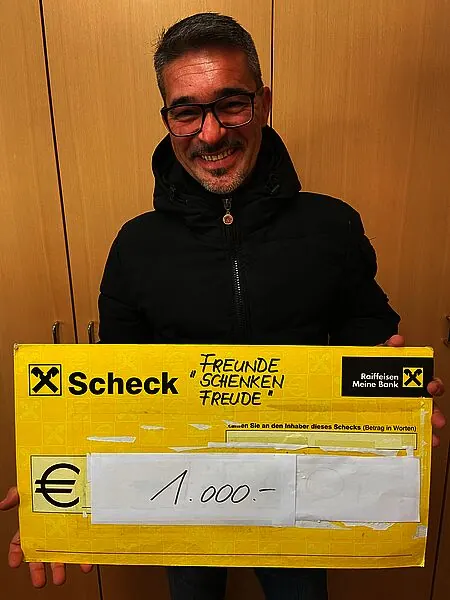
1.000 Euro für die Familie von Mathias Tschol
Wir beteiligen uns mit 1.000 Euro an der Spendenaktion für die hinterbliebene Familie von Mathias Tschol.
Weiterlesen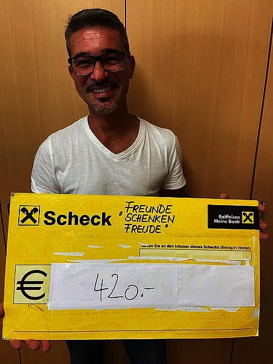
420 Euro für die Wien-Fahrt der Mittelschule Völs
420 Euro, damit Schüler der Mittelschule Völs an der Fahrt nach Wien teilnehmen können.
Weiterlesen2021
3 Spenden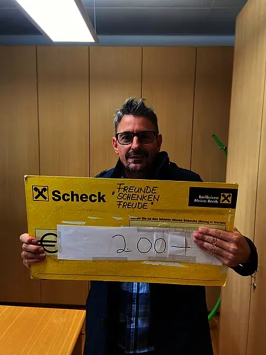
200 Euro für eine junge Mutter in Not
200 Euro für eine junge Mutter, die in eine finanzielle Notlage geraten war.
Weiterlesen
Lebensmittelgutscheine für eine junge Familie
300 Euro in Form von Lebensmittelgutscheinen für eine junge Familie in Not.
Weiterlesen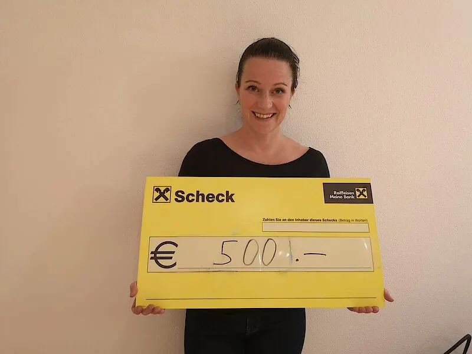
500 Euro für einen alleinerziehenden Vater
500 Euro für dringend benötigte Schulsachen und Kleidung für die Tochter eines alleinerziehenden Vaters.
Weiterlesen2020
3 Spenden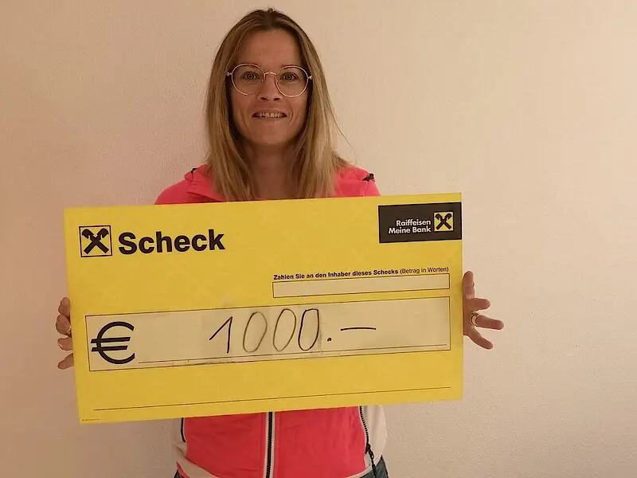
1.000 Euro für eine Familie nach dem Tod des Vaters
Rasche Hilfe von 1.000 Euro für eine Familie, deren Vater nach kurzer, schwerer Krankheit verstorben ist.
Weiterlesen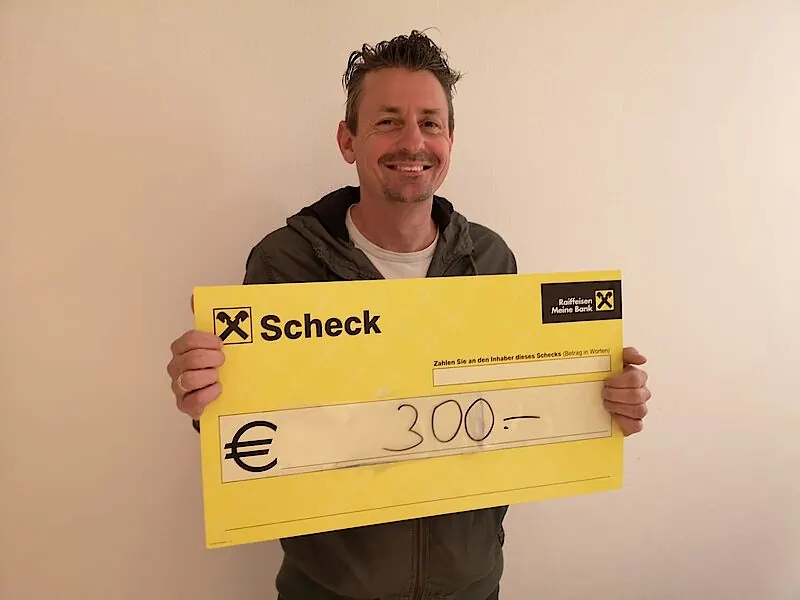
300 Euro für die Weihnachtseinkäufe eines alleinerziehenden Vaters
Mit 300 Euro unterstützen wir einen alleinerziehenden Vater bei seinen Weihnachtseinkäufen.
Weiterlesen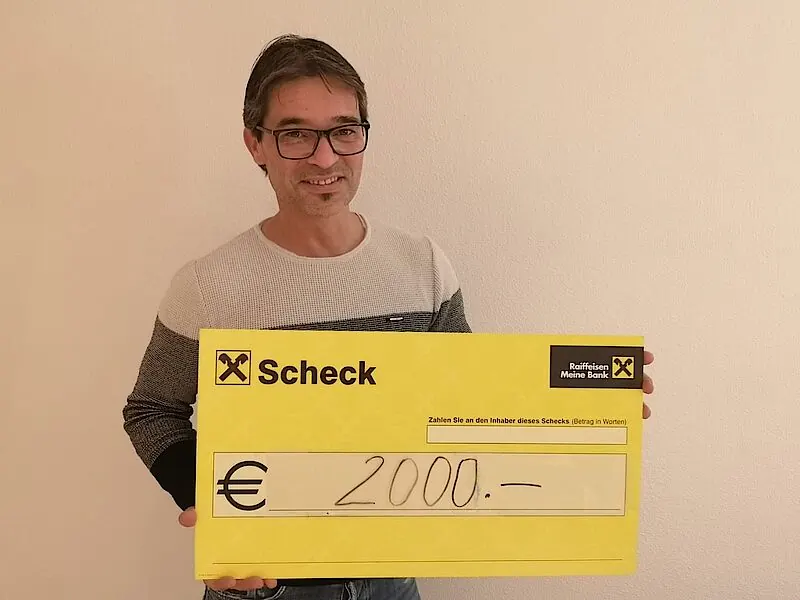
2.000 Euro für einen behindertengerechten Autoumbau
2.000 Euro für eine Dame, die ihr Auto behindertengerecht umbauen lassen muss.
Weiterlesen2019
6 Spenden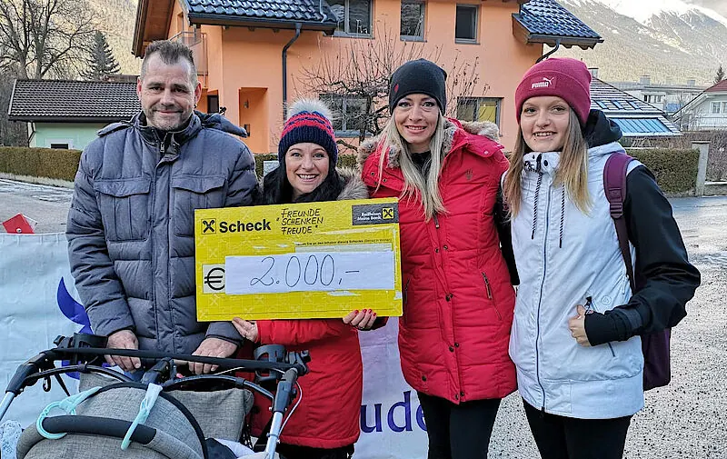
2.000 Euro für eine Familie während der Leukämie-Behandlung der Mutter
Schnelle Hilfe von 2.000 Euro für eine Familie mit kleinen Zwillingen, deren Mutter an Leukämie erkrankt ist.
Weiterlesen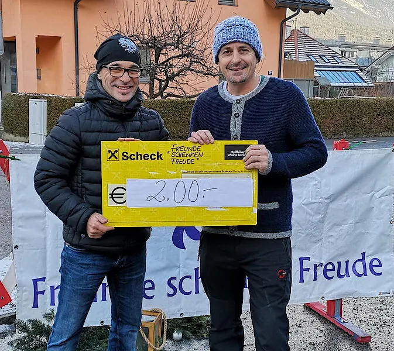
200 Euro für Weihnachten einer jungen Familie
200 Euro für eine junge Familie, die damit einige Kleinigkeiten für Weihnachten besorgen konnte.
Weiterlesen
6.360 Euro für eine Rikscha für die Völser Senioren
Wir haben eine Rikscha für das Haus der Senioren finanziert: Freiwillige chauffieren damit ältere Völserinnen und Völser.
Weiterlesen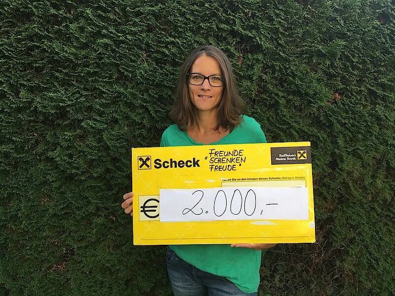
2.000 Euro für eine Familie nach dem Tod eines jungen Vaters
2.000 Euro für eine Familie, die ihren Ehemann und Vater mit 32 Jahren durch einen Gehirntumor verloren hat.
Weiterlesen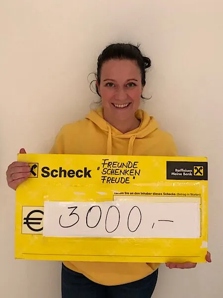
3.000 Euro für Hannahs Therapien
3.000 Euro für die kleine Hannah, die nach einem schweren Unfall viele Therapien braucht.
Weiterlesen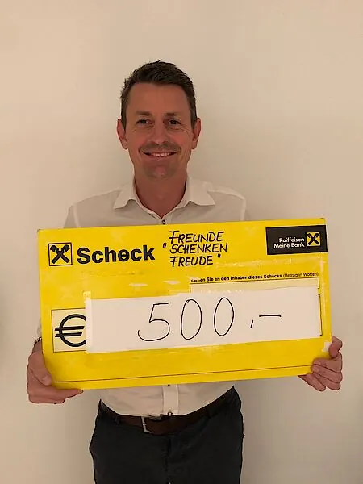
500 Euro für Michaels Arzttermin in München
500 Euro für Michael, der am seltenen Shwachman-Diamond-Syndrom leidet, für einen Termin bei einem Spezialisten.
Weiterlesen2018
10 Spenden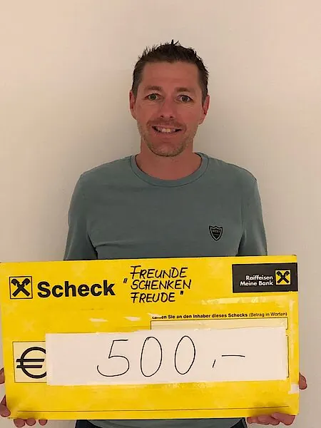
Ein schönes Weihnachtsfest für eine alleinerziehende Mutter
500 Euro für eine alleinerziehende Mutter, deren Sohn an fokaler Epilepsie leidet.
Weiterlesen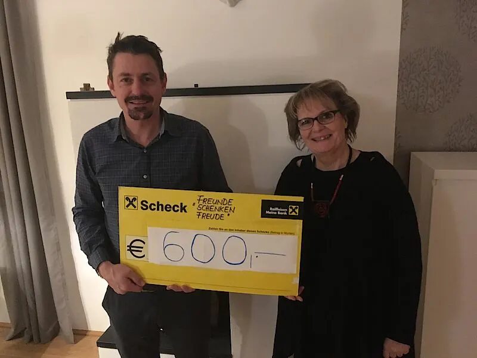
Weihnachtsgeschenke für zwei Familien, die ihren Vater verloren haben
600 Euro für Weihnachtsgeschenke für zwei Familien, deren Väter kürzlich verstorben sind.
Weiterlesen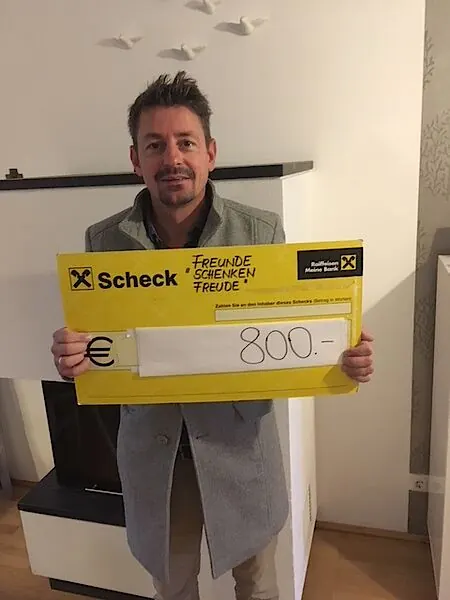
800 Euro für einen Mann, dem der Strom abgestellt wurde
800 Euro für einen Mann, der von der Notstandshilfe lebt und dem der Strom abgestellt wurde.
Weiterlesen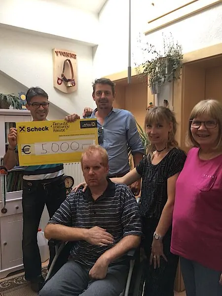
5.000 Euro für einen Rollstuhllift für Meinrad Buttinger
5.000 Euro für einen Rollstuhllift für Meinrad Buttinger aus Tarrenz, der nach einem Arbeitsunfall im Rollstuhl sitzt.
Weiterlesen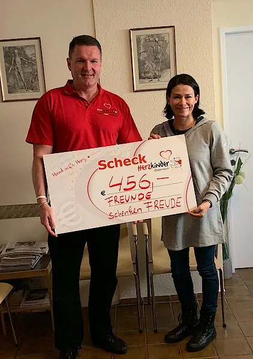
456 Euro für zwei Patenschaften bei den Herzkindern Tirol
Wir haben zwei Patenschaften bei den Herzkindern Tirol übernommen und unterstützen damit zwei Kinder aus dem Mittelgebirge.
Weiterlesen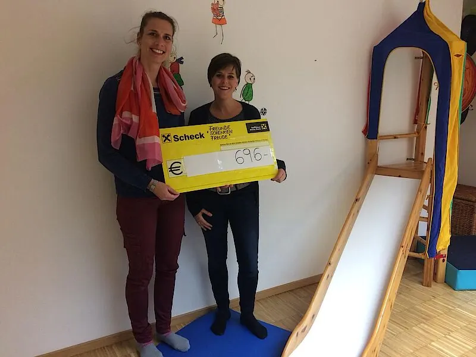
696 Euro für neue Möbel und Spielzeug im EKIZ Völs
696 Euro für neues Mobiliar und Spielzeug im Eltern-Kind-Zentrum Völs.
Weiterlesen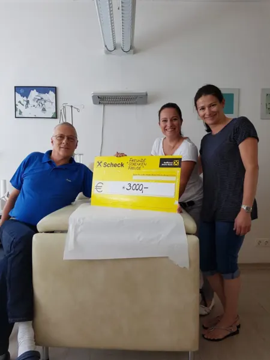
3.000 Euro für Dr. Künstles Einsatz in Nepal
3.000 Euro für den Völser Kinderarzt Dr. Künstle und seine ehrenamtliche Arbeit in einem medizinischen Zentrum in Nepal.
Weiterlesen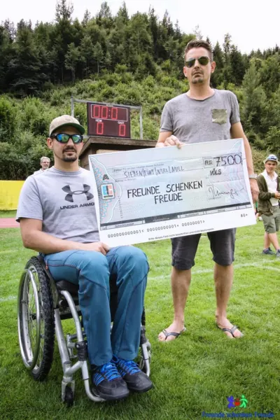
7.500 Euro für Andi Riedls Weg zurück in die Berge
Mit 7.500 Euro haben wir dem Völser Rollstuhlsportler Andi Riedl ein E-Bike für die Berge ermöglicht.
Weiterlesen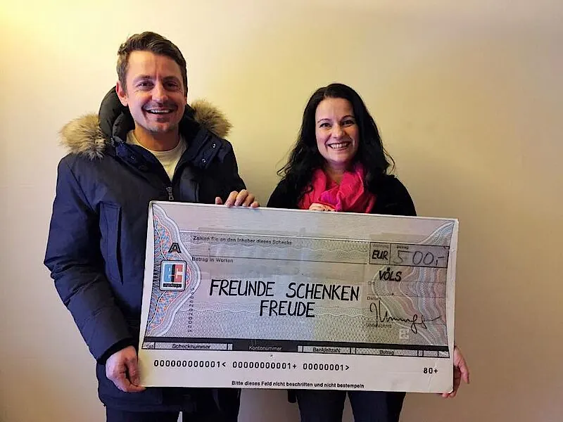
500 Euro für die Arbeitskleidung eines jungen Völsers
500 Euro für dringend benötigte Arbeitskleidung, damit ein junger Völser seine Arbeitsstelle antreten kann.
Weiterlesen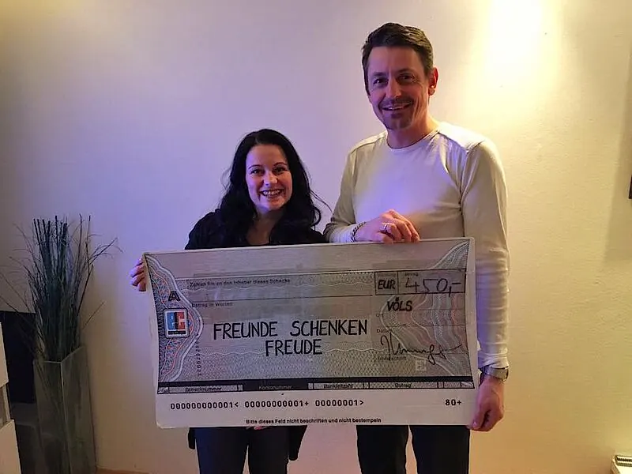
Apothekengutschein für eine junge Frau nach einem Reitunfall
600 Euro in Form eines Apothekengutscheins für eine 25-jährige Tirolerin, die seit einem Reitunfall einen langen Leidensweg geht.
Weiterlesen2017
2 Spenden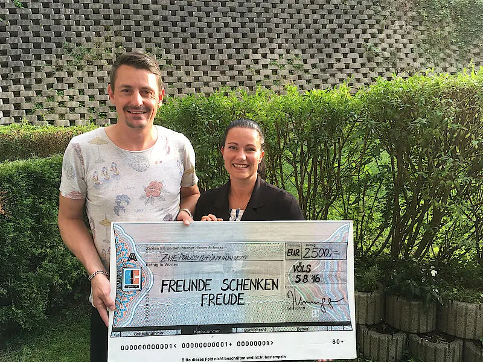
2.500 Euro für die Autoreparatur einer Völserin
2.500 Euro für die Reparatur des behindertengerechten Autos einer querschnittgelähmten Völserin.
Weiterlesen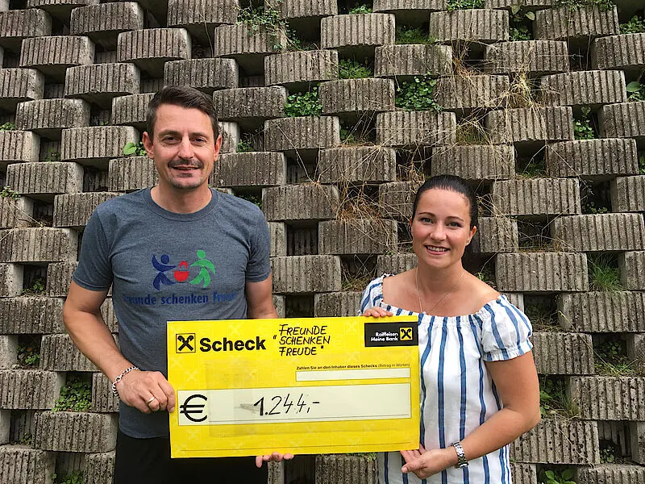
1.244 Euro für ein Rollstuhlmoped für Beatrix
Wir haben den fehlenden Betrag von 1.244 Euro für ein Rollstuhlmoped gespendet – eine Aktion von Emil Schranz.
Weiterlesen2016
3 Spenden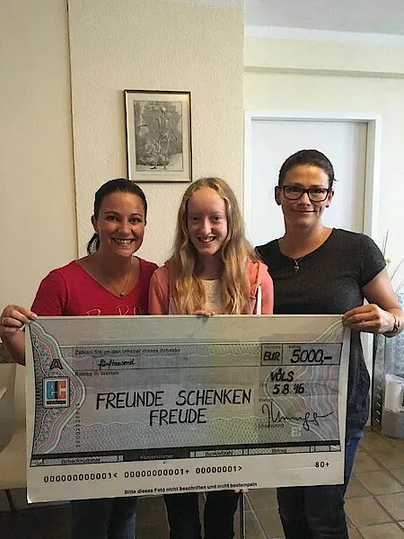
5.000 Euro für Fabians Operation in Barcelona
Wir haben die Kosten von 5.000 Euro für die Operation des 15-jährigen Fabian Petz bei einem Spezialisten in Barcelona übernommen.
Weiterlesen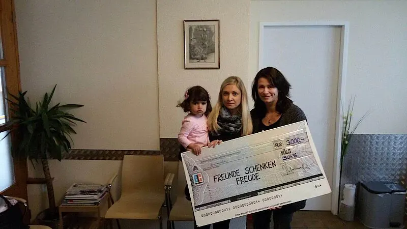
3.000 Euro für Familie Kinzner
3.000 Euro für Melanie Kinzner und ihre Töchter Sarah und Chiara, die ihren Ehemann und Papa verloren haben.
Weiterlesen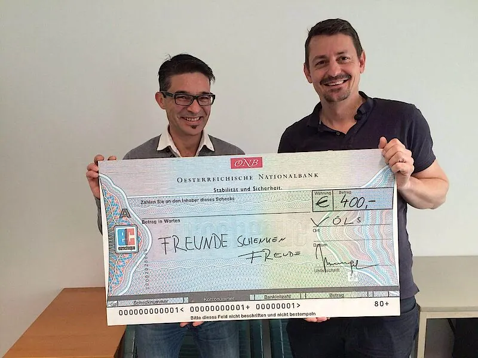
400 Euro für eine Völser Familie in einer Notlage
400 Euro, mit denen eine Familie aus Völs eine vorübergehende Notlage überbrücken konnte.
Weiterlesen2015
4 Spenden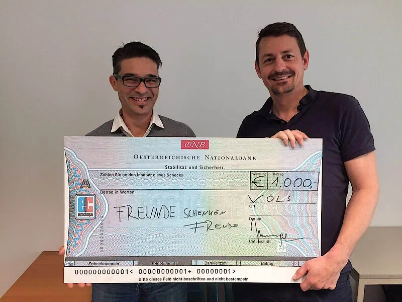
1.000 Euro für Adrijana und ihre Mutter
1.000 Euro für Adrijana und ihre Mutter – als Beitrag zu einem Projekt des Soccer Teams.
Weiterlesen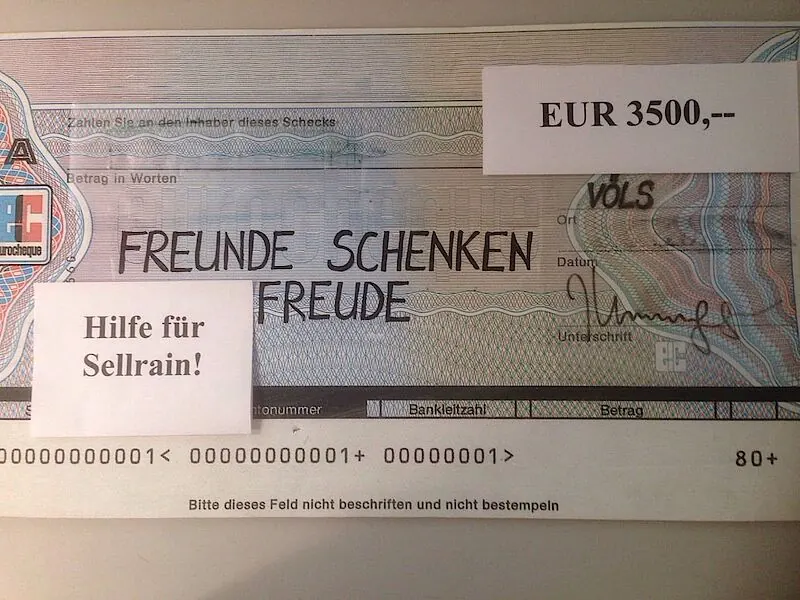
Nachbarschaftshilfe: 3.500 Euro für Sellrain
Nach der Unwetterkatastrophe brauchte die Gemeinde Sellrain schnelle Hilfe – wir haben 3.500 Euro gespendet.
Weiterlesen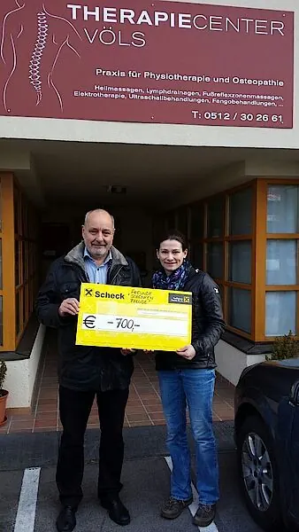
700 Euro für die Traumatherapie eines Völser Mädchens
700 Euro für ein Völser Mädchen, das nach einer Familientragödie eine Traumatherapie braucht.
Weiterlesen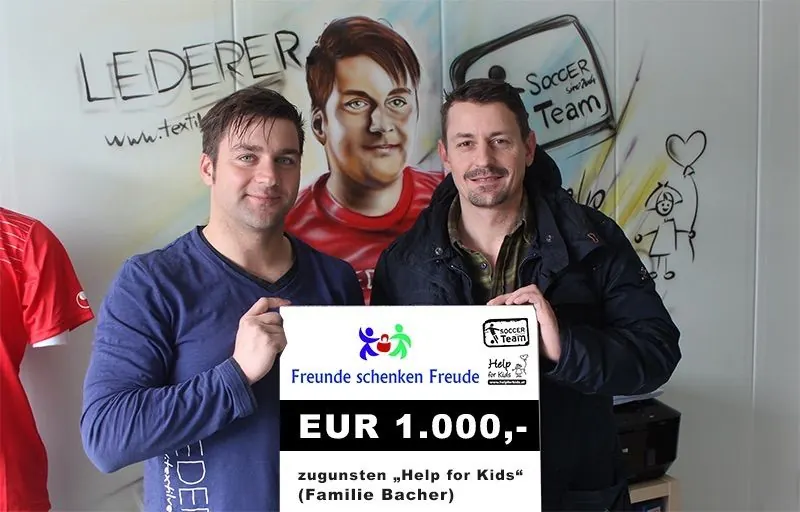
1.000 Euro für Valentina und ihre Mutter
Wir haben uns mit 1.000 Euro am Spendenaufruf des Soccer-Teams für Valentina und ihre Mutter aus Volders beteiligt.
Weiterlesen2014
2 Spenden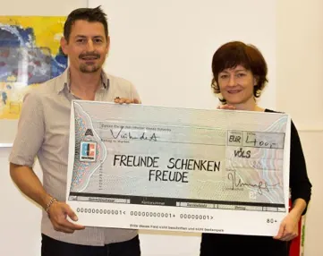
400 Euro für zwei junge Familien
400 Euro, die zwei jungen Familien ihren Alltag ein wenig erleichtern.
Weiterlesen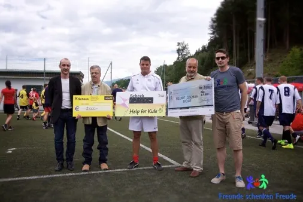
Zwei Spenden über je 2.000 Euro beim Turnier 2014
Beim Turnier 2014 übergaben wir je 2.000 Euro an eine alleinerziehende Mutter von vier Kindern und an den Völser Verein „Impulse“.
Weiterlesen2013
10 Spenden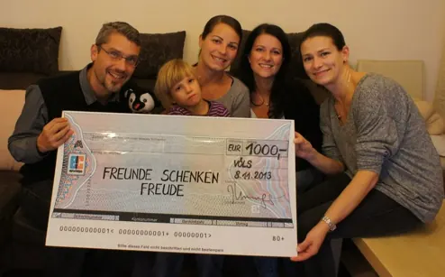
Rutschenrennen für Janas Delphintherapie
Unser erstes Marktgemeinde-Rutschenrennen im Völser Badl und 1.000 Euro für Janas Delphintherapie.
Weiterlesen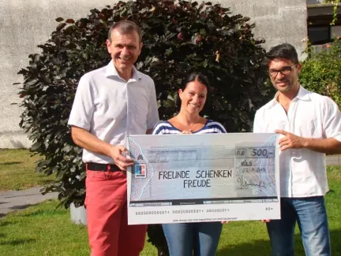
500 Euro für einen 74-jährigen Mindestpensionisten
Über den Sozialsprengel Völs unterstützen wir einen alleinstehenden 74-Jährigen mit Mindestpension mit 500 Euro.
Weiterlesen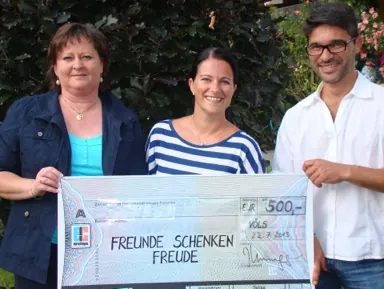
500 Euro für einen alleinstehenden Herrn mit Diabetes
Über den Sozialsprengel Völs erhält ein 65-jähriger Diabetiker mit Mindestsicherung Lebensmittel und Kleidung im Wert von 500 Euro.
Weiterlesen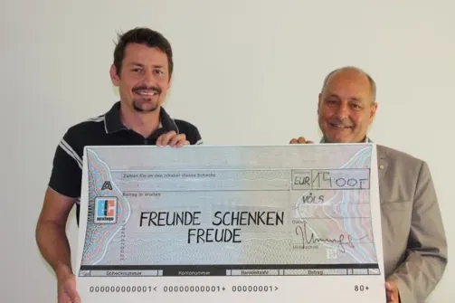
1.400 Euro für Mutter und Sohn im Frauenhaus
1.400 Euro ermöglichen einer Frau und ihrem Sohn ein weiteres Monat Schutz im Frauenhaus Völs.
Weiterlesen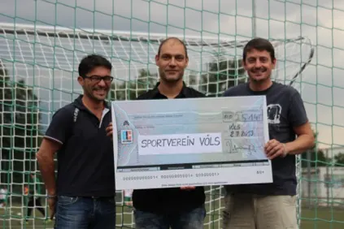
SV Völs übergibt 2.514 Euro an Freunde schenken Freude
Der SV Völs stellte Platz und Kantine für unser Turnier zur Verfügung und übergab uns den Kantinenerlös von 2.514 Euro.
Weiterlesen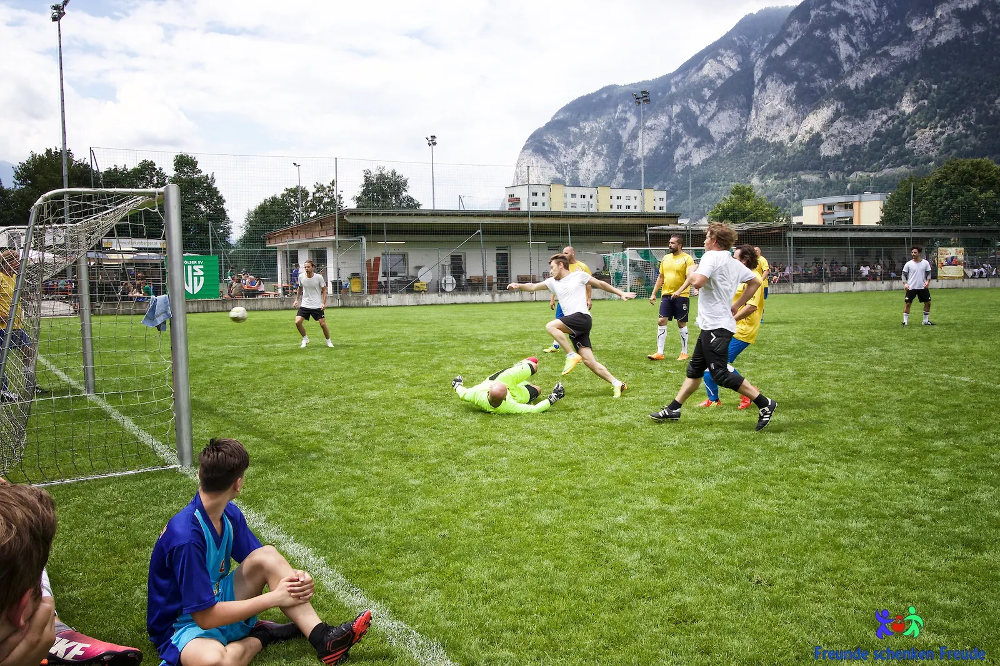
HC Tiroler Wasserkraft spendet 500 Euro
Der HC Tiroler Wasserkraft spielte bei unserem Turnier mit, stellte ein Stehplatz-Abo zur Verfügung und spendete 500 Euro.
Weiterlesen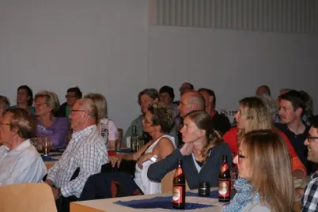
Dorfbühne Völs spendet 500 Euro an Freunde schenken Freude
Die Dorfbühne Völs spielte eine Vorstellung zu unseren Gunsten und rundete die Eintrittsgelder auf 500 Euro auf.
Weiterlesen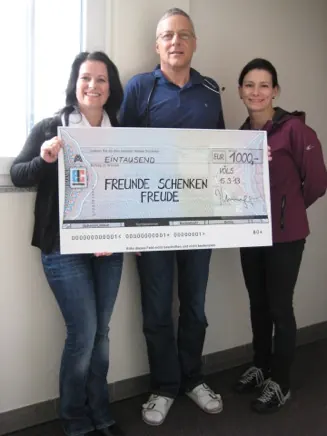
1.000 Euro für Dr. Künstles Nepal-Projekt
1.000 Euro für das Nepal-Projekt des Völser Kinderarztes Dr. Künstle – schon fünf Euro reichen dort für die Behandlung eines Kindes.
Weiterlesen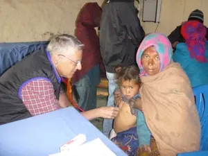
Bericht aus Nepal: Eine Kinderambulanz in Simikot
Dr. Künstle berichtet von seiner Reise nach Westnepal, wo unsere Spende Ausrüstung für eine Kinderambulanz in Simikot finanzierte.
Weiterlesen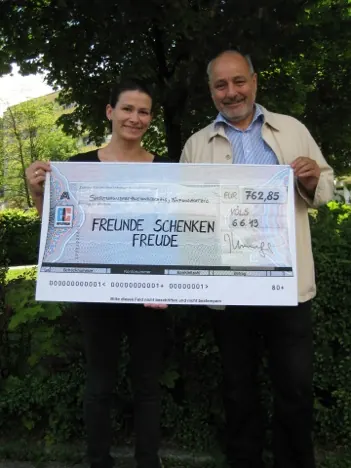
Selbstbehalt für den Rollstuhl eines fünfjährigen Mädchens
Wir übernehmen den Selbstbehalt von 762,85 Euro für den Rollstuhl eines fünfjährigen Mädchens aus Völs.
Weiterlesen2012
2 Spenden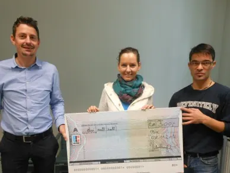
Unterstützung für ein junges Paar mit Baby
Wir unterstützen ein junges Paar, das gerade sein erstes Baby bekommen hat und sich eine gesicherte Zukunft aufbaut.
Weiterlesen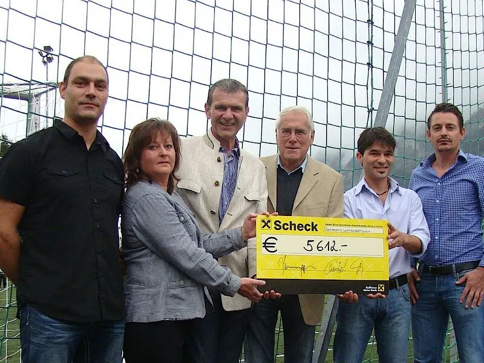
Unsere erste Spende: 5.612 Euro für den Sozialsprengel Völs
Die gesamten Einnahmen unseres ersten Kurt Larcher Gedenkturniers, 5.612 Euro, gehen an den Sozialsprengel Völs.
Weiterlesen